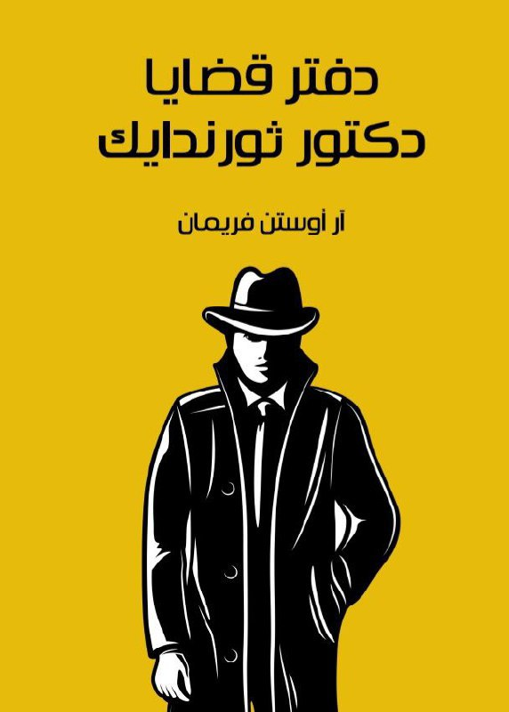

لكل محبي القراءة واينما كنتم , ان كنتم تبحثون عما يشبع رغبتكم المستمرة بالقراءة فأنتم بالمكان الصحيح. مكتبة زاد من اشهر المواقع العربية التي يسهل للقارئ إيجاد الكتاب الذي يبحث عنها ويمكنه تصفحها او تحميلها

لكل محبي القراءة واينما كنتم , ان كنتم تبحثون عما يشبع رغبتكم المستمرة بالقراءة فأنتم بالمكان الصحيح. مكتبة زاد من اشهر المواقع العربية التي يسهل للقارئ إيجاد الكتاب الذي يبحث عنها ويمكنه تصفحها او تحميلها
تَصحبُنا صفحاتُ هذه المجموعة القصصية في جولةٍ شائقة من مغامرات الدكتور «ثورندايك». نرى من خلال هذه المغامرات بصيرتَه الثاقبة وبراعتَه الفائقة في استخدام أحدث الأساليب وتسخير مُختلِف الأدوات والابتكارات العِلمية لحلِّ غموض القضايا التي تواجهه.

zadlibrery@gmail.com